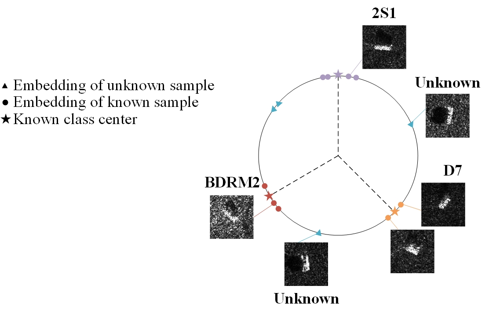
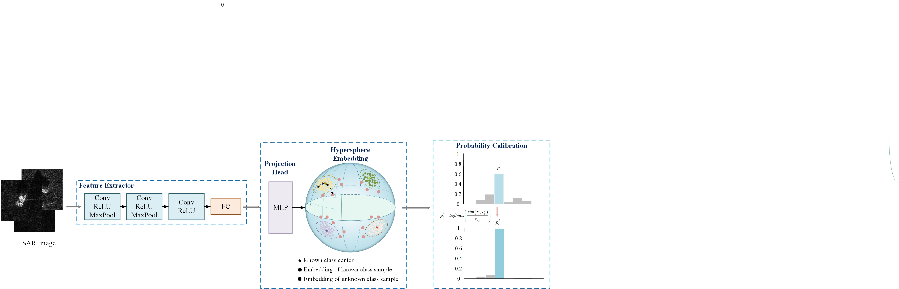
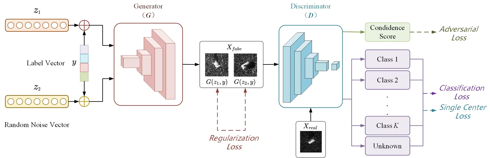
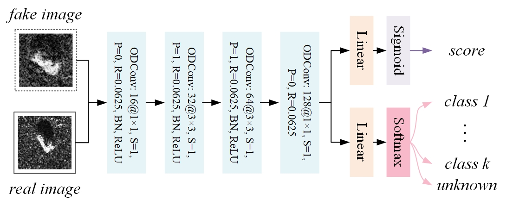
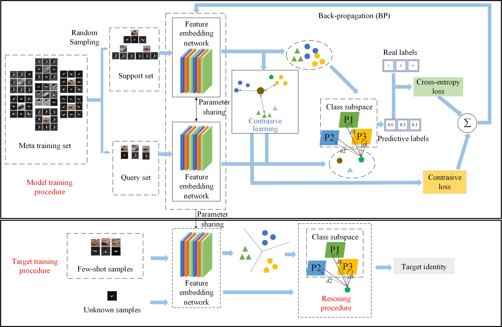

Yue Li
Welcome! I am now a graduate student in Communication Engineering at the University of Electronic Science and Technology of China (UESTC). My research foucuses on remote sensing image interpretation, deep learning and radar target recognition, with a specific emphasis on tackling the challenges of target classification and recognition in open-world scenarios. For more information on my research interests and experience, check out my Research page!


Education
 MS in Communication Engineering, Expected 2024
MS in Communication Engineering, Expected 2024
University of Electronic Science and Technology of China
Advisior: Haohao Ren
 BS in Communication Engineering, 2021
BS in Communication Engineering, 2021
Hefei University
Highlight: I'm ranked first in my major
Research Experience
I am currently focusing on Synthetic Aperture Radar (SAR) target recognition in open-world scenarios,
that is, our model is expected to acheive two goals simultaneously:
(1) Classify images of known classes correctly; (2) Recognize unknown classes that have not been seen during training stage.
My role: Main researcher

On a unit hyperspherical embedding space, the feature is normalized and the similarity between different samples is determined only by the anglular difference between them

- Model extracted features onto a unit hypersphere with von Mises-Fisher (vMF) distribution to improve the inter-class separability of learned representations
- Measure the similarity of samples to each class center by angular difference and designed a discrimination criterion to detect unknown targets based on this metric
- Calibrate the predicted probability according an uncertainty estimation score to output more reliable predictions
- Implement the algorithm and evaluate the performance on a public SAR imagery dataset (MSTAR)
My role: Main researcher


- Propose a threshold-free open-set learning network for SAR target recognition
- Improve the network structure of GAN to formulate the open-set recognition problem as a K+1 classification task, allowing the model to achieve both known classes classification and unknown classes identification automatically
- Implement the algorithm, evaluat the performance, and compare it with four SOTA models on two public SAR datasets (MSTAR and SAMPLE)
- Summarize the ideas and experimental results, write a paper, and submit it to IEEE Sensors Journal (2023)
My role: Main developer

- Establish a feature embedding network based on Siamese structure to extract discriminative features for few-shot SAR target recognition
- Develop a subspace learning-based classifier to identify the type of SAR target
- Evaluate the performance of the proposed method and compare it with three popular models on a public SAR dataset (MSTAR)
Publications
Journal Paper:
Yue Li, Haohao Ren, Xuelian Yu, Chengfa Zhang, Lin Zou, and Yun Zhou
IEEE Sensors Journal, 2023
(Under Revision)
Conference Paper:
Yue Li, Haohao Ren, Xuelian Yu, Chengfa Zhang, Lin Zou, and Yun Zhou
IET International Radar Conference (IET IRC 2023), 2023
Patent:
-
A Few-shot SAR Target Recognition Method Based on Siamese Subspace Classification Network
Xuelian Yu, Yue Li, Haohao Ren, Sen Liu, Fulu Dong, Lin Zou, and Yun Zhou
CN patent No. CN202211159684.0 | September 2022 -
A Deep Network Based on Bi-similarity Metric for Few-shot SAR Target Recognition
Xuelian Yu, Sen Liu, Haohao Ren, Sihui Yu, Yue Li, Lin Zou, and Yun Zhou
CN patent No. CN202211198200.3 | September 2022